01Open the Documents page从文档页开始
On your Onshape Documents page, click Create. Choose Document… from the menu.
在 Onshape 文档页点击 Create（创建），然后在菜单中选择 Document…（文档）。
Recording excerpt录屏节选
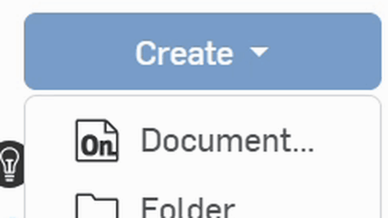
Connect two circles with Loft, open both ends with Shell, then add the round base with Revolve. Lengths are in inches.
用 Loft（放样）连接两个圆，用 Shell（抽壳）打开两端，再用 Revolve（旋转）做出圆形底座。长度均使用英寸。
No matching steps. Try a step number or a tool name.没有匹配的步骤。可以输入步骤编号或工具名称。
Steps 01–04第 01–04 步
On your Onshape Documents page, click Create. Choose Document… from the menu.
在 Onshape 文档页点击 Create（创建），然后在菜单中选择 Document…（文档）。

Click the Name field, type Traffic Cone, and click Create. Keep the default Part Studio 1 tab that opens at the bottom.
点击名称 Name 输入框，输入 Traffic Cone，再点击创建 Create。打开后，保留底部默认的 Part Studio 1 标签。
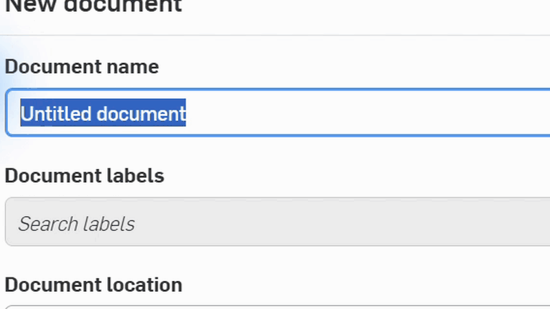
In the top left, click the three-line Document menu between the Onshape logo and the document name. Click Workspace units… in the menu.
在左上角，点击 Onshape 标志与文档名称之间的三横线文档菜单 Document menu。在菜单中点击工作区单位 Workspace units…。
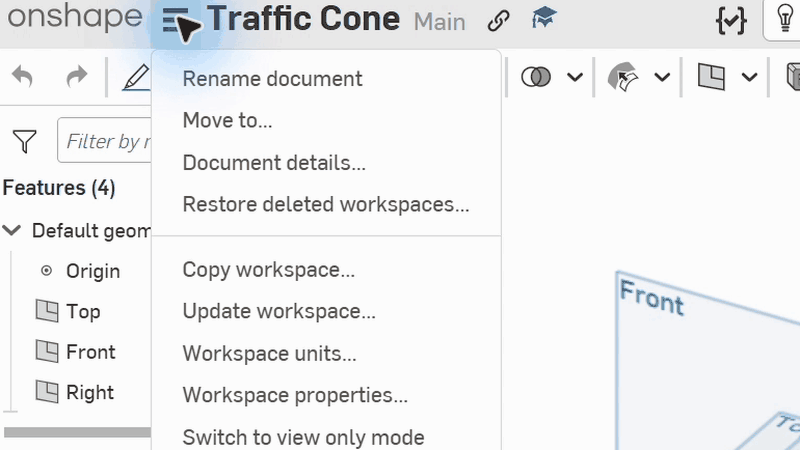
Under Length, open Length default unit and choose Inch. If it already reads Inch, leave it selected. Click the green checkmark.
在 Length（长度）下找到 Length default unit（默认长度单位）。如果显示其他单位，打开下拉框并选 Inch（英寸）。确认已显示 Inch 后，点击绿色对勾。
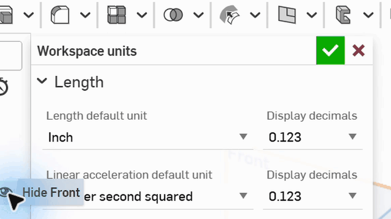
Steps 05–10第 05–10 步
In the Features list on the left, click the Top row under Default geometry. Click Sketch, the pencil button on the toolbar. Confirm that Sketch plane says Top plane.
在左侧特征 Features 列表中，点击默认几何 Default geometry 下的上视平面 Top。点击工具栏上的铅笔按钮草图 Sketch，确认草图平面 Sketch plane 显示 Top plane。
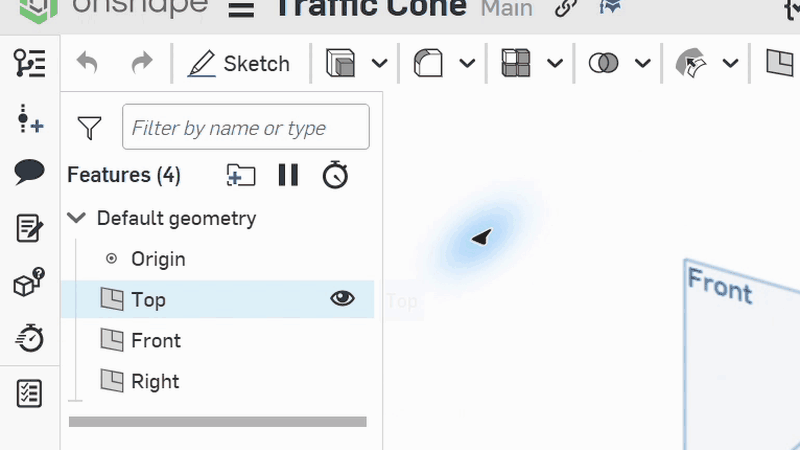
Click the face labeled Top on the view cube in the upper right. Wait for the view to settle. The sketch origin is the small point at the center of the drawing area.
点击右上角视图立方体上标有 Top 的面。等视角转动结束后，找到画图区中央的小点，它就是草图原点。
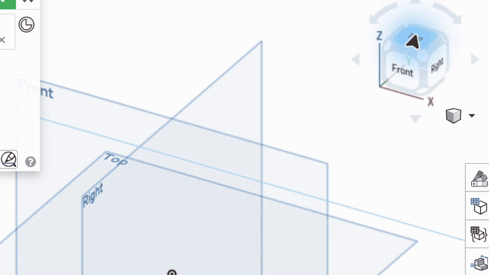
While editing Sketch 1, find the ring icon in the sketch toolbar. Hover over it to look for Center point circle. If the circle group shows a different tool, open its small arrow and choose Center point circle. Click the sketch origin once, move down and to the right, and click again to place the circle edge. Press Esc. You will set the exact size in step 08.
保持在 Sketch 1 的编辑界面。在草图工具栏找到圆环图标，停住鼠标查看名称 Center point circle（圆心圆）。如果圆工具组显示另一种画圆方式，点击旁边的小箭头，选择 Center point circle。先单击草图原点，再把鼠标向右下移动并单击一次，放下圆周。按 Esc。第 08 步再输入精确尺寸。
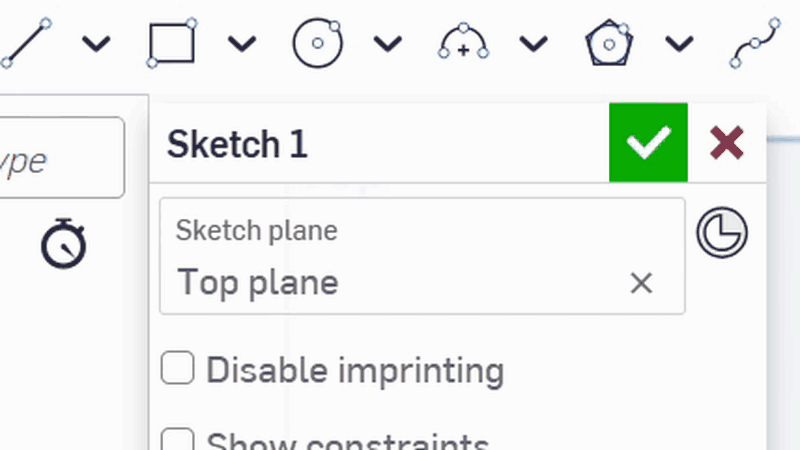
While the sketch is open, click Dimension on the sketch toolbar, or press D. Click the circle’s outline once. Move into empty space outside the circle and click to place the diameter label. Type 4 in in the value box and press Enter. The diameter symbol Ø should appear before the number.
在草图编辑界面，点击工具栏上的 Dimension（尺寸），也可以按 D。单击圆周，再把鼠标移到圆外空白处单击，放下直径标注。在数值框中输入 4 in，按 Enter。数字前应出现直径符号 Ø。
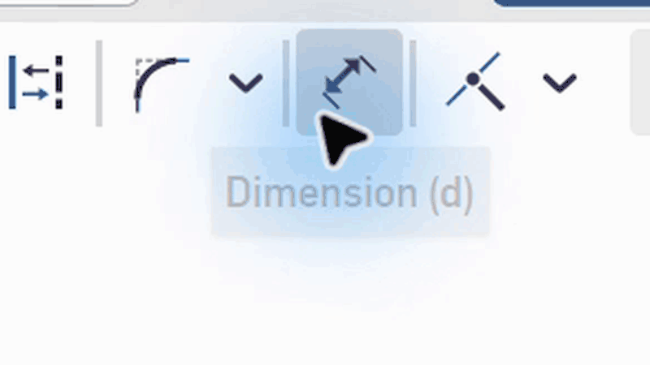
If Onshape says “A dimension cannot be created between these items,” press Esc. Hover over Top, Front and Right in the feature list. Click the eye beside each visible plane to hide it, or press P to toggle the planes together as shown. Click Dimension again, click the circle’s outline and finish step 08. If you already see Ø4, continue to step 10.
如果出现 “A dimension cannot be created between these items”，按 Esc。将鼠标依次停在左侧 Top、Front 和 Right 平面行，点击可见平面旁的眼睛图标将其隐藏。也可像动图中那样按 P，一起切换平面显示。重新选择 Dimension，点中圆周，再完成第 08 步的标注。已经看到 Ø4 时，直接继续第 10 步。
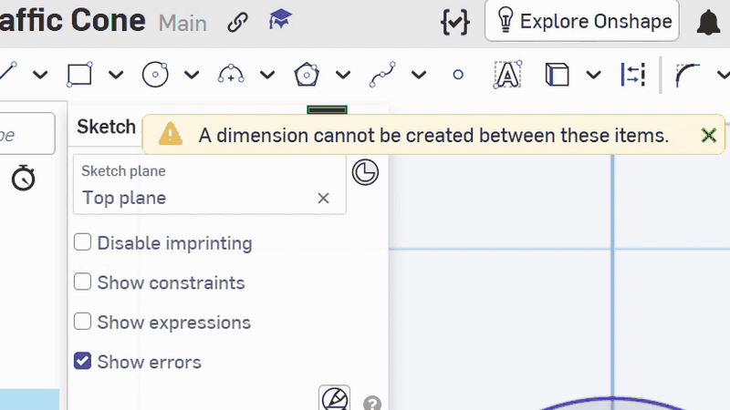
Press Esc to leave Dimension. If the label is off screen, scroll back one notch to zoom out. Check that the disk has a shaded interior and the dimension reads Ø4. Click the green checkmark to finish Sketch 1.
按 Esc 退出 Dimension。如果尺寸标注超出屏幕，可向后滚动滚轮一格缩小视图。确认圆内有填充，直径标注为 Ø4，然后点击绿色对勾完成 Sketch 1。
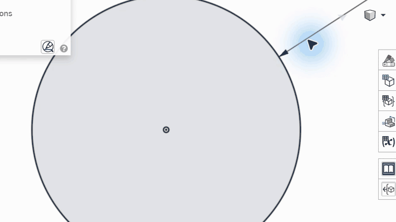
Steps 11–19第 11–19 步
Click the small arrow beside the Camera and render options icon below the view cube. Click Isometric to see the direction in which the plane will move.
点击视图立方体下方相机与渲染选项 Camera and render options 图标旁的小箭头，再点击等轴视图 Isometric，便于观察平面的偏移方向。
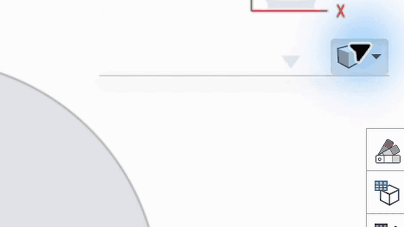
Click the Top row under Default geometry, even if its eye icon indicates that the plane is hidden. Click Plane in the top toolbar. If the toolbar is crowded, click Search tools, type Plane, and click the Plane result.
点击 Default geometry 下的 Top 行。即使眼睛图标表示该平面已隐藏，仍可从列表中选择它。点击上方工具栏的平面 Plane。如果工具栏中找不到，点击搜索工具 Search tools，输入 Plane，再点击搜索结果中的 Plane。
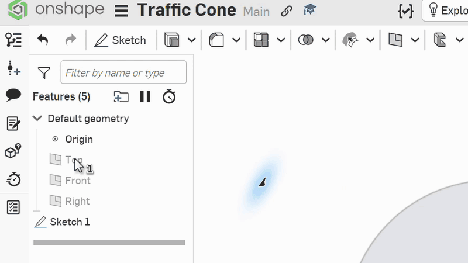
In the Plane 1 dialog, check that Entities contains Top plane and the type is Offset. Click Offset distance, replace the existing value with 12 in, and press Tab to apply it.
在 Plane 1 对话框中，确认对象 Entities 已列出 Top plane，类型为偏移 Offset。点击偏移距离 Offset distance，用 12 in 替换原值，按 Tab 应用。
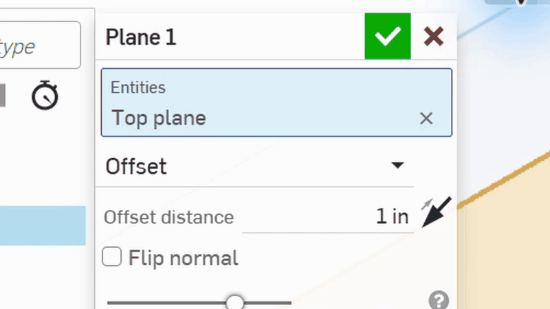
In the angled view, find the Plane 1 preview. It should be 12 in above Top and the lower circle. If it appears below them, click Opposite direction, the arrow beside Offset distance. Leave Flip normal unchecked. When the preview is above the lower circle, click the green checkmark.
在等轴视图中看 Plane 1 的预览：它应在 Top 平面与底部圆上方 12 in 处。如果预览在下方，点击 Offset distance 旁的反向箭头 Opposite direction。保持 Flip normal（翻转法向）未勾选。确认预览已在底部圆上方，再点击绿色对勾。
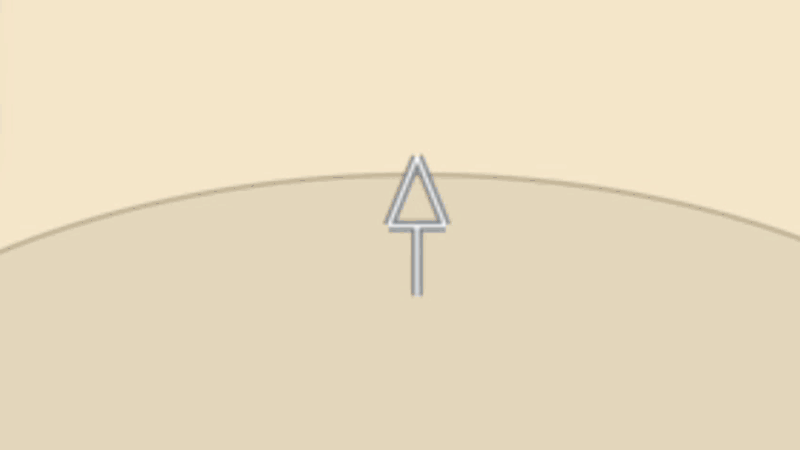
If Plane 1 is outside the window, open Camera and render options under the view cube and choose Zoom to fit. You can also press F. When the upper plane and the lower circle are both visible, continue to step 16.
如果 Plane 1 超出窗口，打开视图立方体下方的 Camera and render options，点击 Zoom to fit（缩放至合适大小），也可以按 F。看得到上方平面和下方圆时，就可以继续第 16 步。
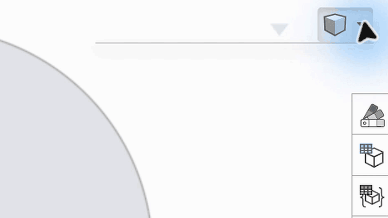
Click Plane 1 in the feature list, then click Sketch. Confirm that Sketch plane says Plane 1. Click the Top face of the view cube for a straight-on view.
在特征列表中点击 Plane 1，再点击草图 Sketch。确认 Sketch plane 显示 Plane 1。点击视图立方体的 Top 面，正对草图观察。
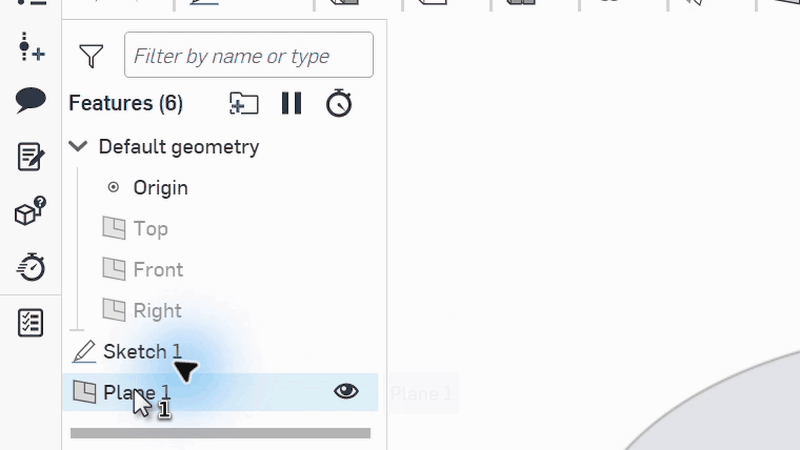
Click Center point circle. Click the point at the center of the sketch, directly above the lower circle's center. Move down and to the right, click to place the rough circle edge, and press Esc.
点击圆心圆 Center point circle。先点击草图中央的点，使它与下方圆的圆心上下对齐。向右下方移动鼠标，再点击一次画出大致圆周，按 Esc。
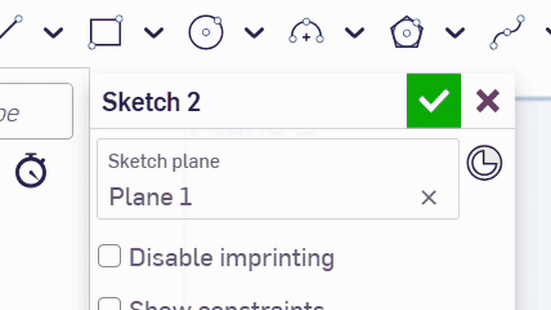
Click Dimension and click the new small circle's boundary. Click blank space to its right, type 1 in, and press Enter. Press Esc.
点击尺寸 Dimension，再点击新画小圆的圆周。在它右侧的空白处点击放置标注，输入 1 in，按 Enter，再按 Esc。
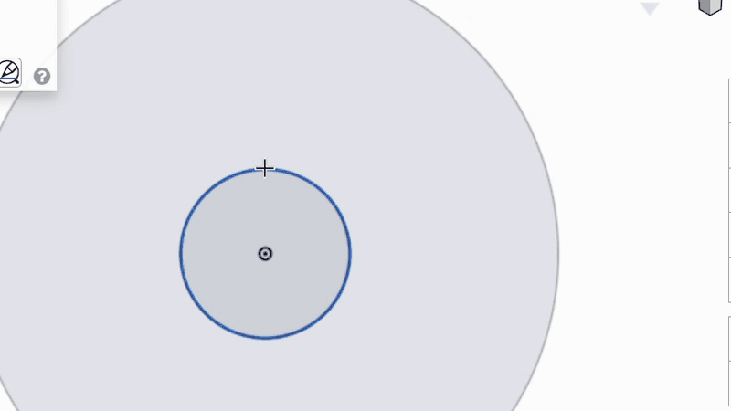
Check that the new circle is labeled Ø1. When viewed from Top, it should sit concentrically inside the larger Ø4 circle. Click the green checkmark to save Sketch 2.
确认小圆标注为 Ø1。从 Top 观察，它应与外面较大的 Ø4 圆同心。点击绿色勾保存 Sketch 2。
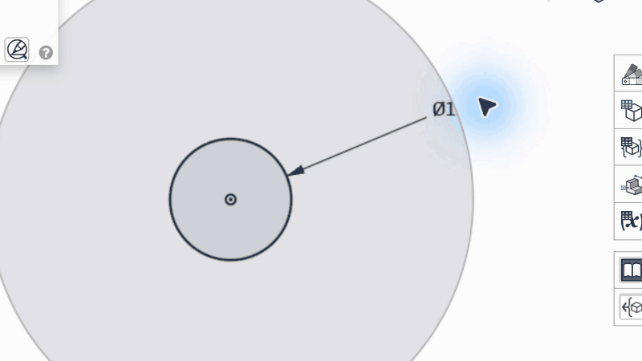
Steps 20–23第 20–23 步
Open Camera and render options under the view cube. Click Isometric. Open the same menu again and choose Zoom to fit, or press F. You should see the large lower circle and the small upper circle at different heights.
打开视图立方体下方的 Camera and render options，点击 Isometric。再次打开同一菜单，点击 Zoom to fit，也可以按 F。应能同时看到两个高度不同的圆，下大上小。
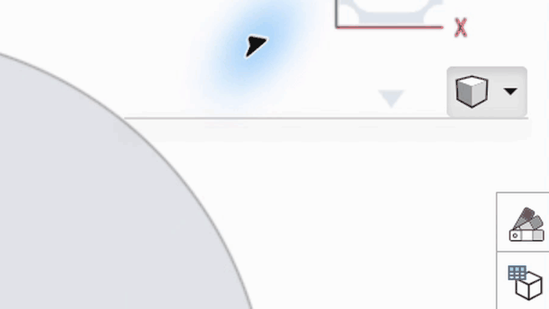
Click Search tools on the top toolbar, type Loft, and click the Loft result. Click Solid and New in the dialog.
点击上方工具栏的搜索工具 Search tools，输入 Loft，点击搜索结果中的放样 Loft。在对话框中点击实体 Solid 和新建 New。
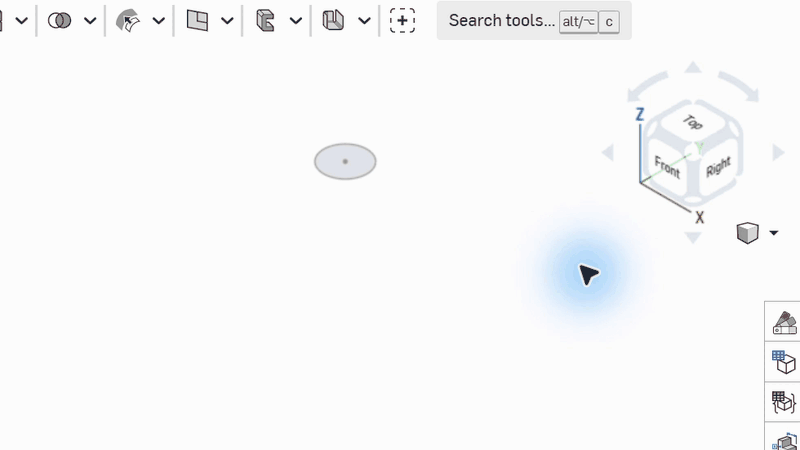
Click Profiles. Click inside the shaded area of the large lower circle, away from its center and outline. Then click inside the small upper circle. Read the rows from top to bottom. They should say Face of Sketch 1 and Face of Sketch 2.
点击 Profiles（截面）。先点击下方大圆的填充区域，避开圆心和圆周。再点击上方小圆的填充区域。核对列表从上到下依次显示 Face of Sketch 1 和 Face of Sketch 2。
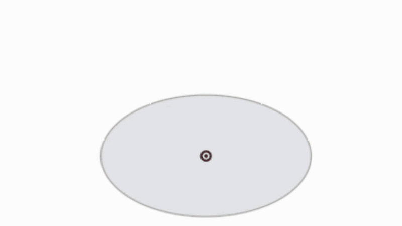
Under End conditions, keep both Start profile condition and End profile condition at None. Leave the guides and path unchecked. Look at the outline from the side. Each side should run straight from the wide bottom to the narrow top, with no bulge or inward dip. Parts (1) in the lower left means Onshape counts one solid part. Click the green checkmark to save Loft 1.
在 End conditions 中，让 Start profile condition 与 End profile condition 都保持 None，引导线和路径保持未勾选。观察锥体的侧轮廓：两侧应由宽底向窄顶沿直线均匀收窄，途中没有鼓包或凹陷。左下角 Parts (1) 表示模型里有一个实体零件。确认后点击绿色对勾，保存 Loft 1。
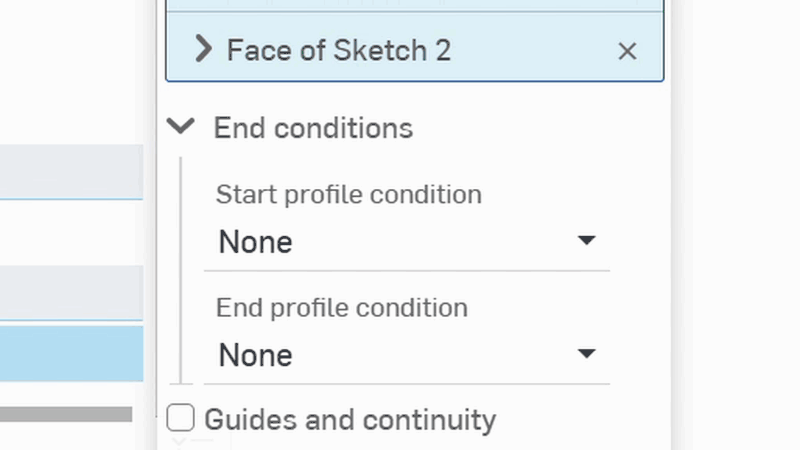
Steps 24–30第 24–30 步
Click Search tools, type Shell, and click the Shell result. Leave Hollow unchecked, then click Faces to remove.
点击 Search tools，输入 Shell，点击搜索结果中的抽壳 Shell。保持封闭空腔 Hollow 未勾选，再点击待移除面 Faces to remove。
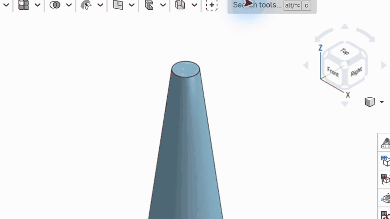
Click inside the small, flat circular top cap. Choose a point slightly away from the center and the rim. The list should show one Face of Loft 1.
点击顶部小圆形平端面的内部，选点稍微避开圆心和边缘。列表应出现一项 Face of Loft 1。
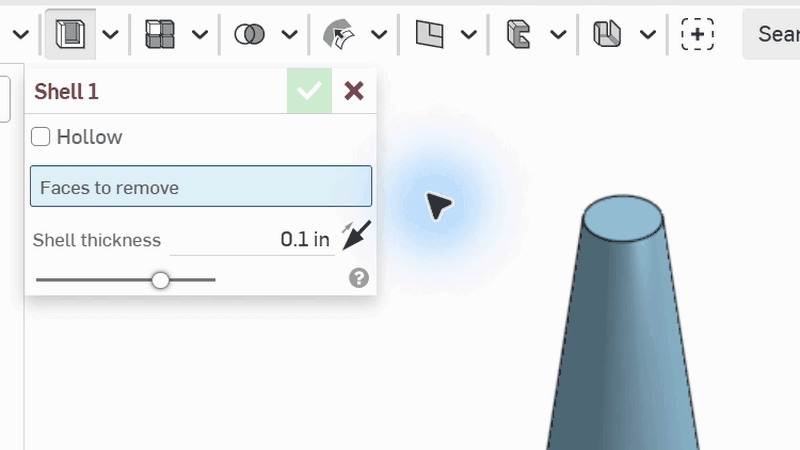
Keep the Shell dialog open. Hold the right mouse button and drag in the graphics area until the underside is visible, then click Bottom on the view cube. You can also press Shift + 6 to switch to Bottom. Click the interior of the large flat bottom disk. Keep the selection clear of both its center and its rim. Faces to remove should now contain two Face of Loft 1 entries.
保持 Shell 窗口打开。按住鼠标右键，在画图区拖动直到看见底部，再点击视图立方体上的 Bottom。也可以按 Shift + 6 直接进入底视图。点击底部大圆形平面的内部，避开圆心和圆边。此时 Faces to remove 中应有两项 Face of Loft 1。
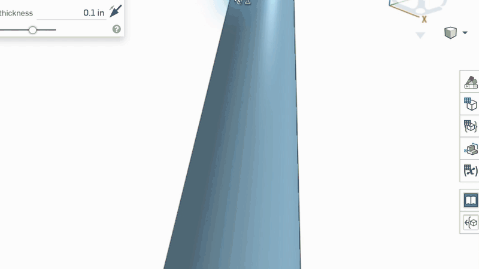
Click Shell thickness, replace the value with 0.10 in, and press Tab. Keep the inward direction. Click the green checkmark to create Shell 1.
点击壁厚 Shell thickness，将数值改为 0.10 in，按 Tab。保持向内抽壳的方向，点击绿色勾生成 Shell 1。
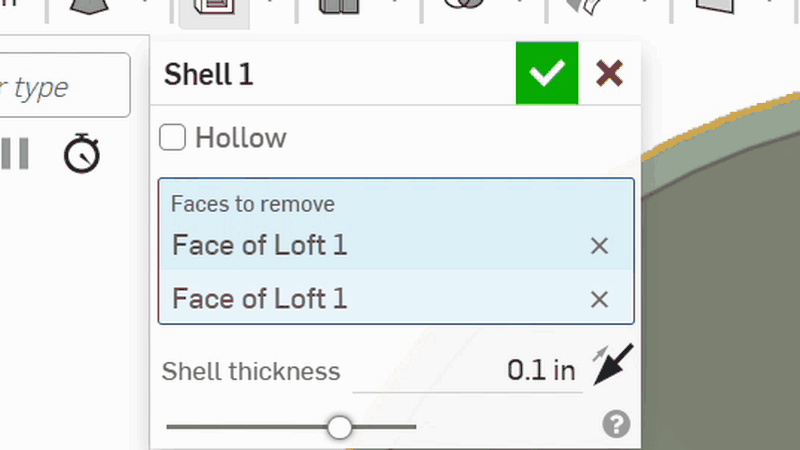
Stay in Bottom view. Look for the thin outer rim and a small circular patch of background at the center. Seeing the background through that small circle confirms that both ends are open.
保持 Bottom 底视图。先看最外侧的一圈薄壁，再看中央的小圆孔。能够透过小孔看到画布背景，说明上下两个开口贯通了。
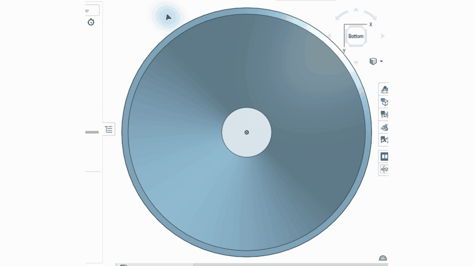
Check that Shell 1 appears in Features and that the lower-left list still shows Parts (1).
确认特征 Features 列表中出现 Shell 1，左下方仍显示 Parts (1)。
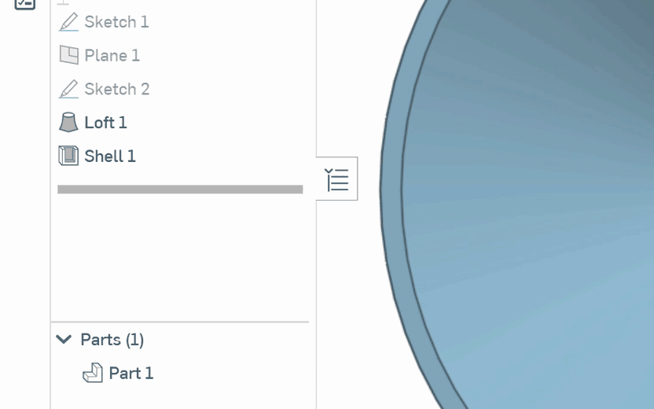
Click the Camera and render options arrow and choose Isometric before starting the flange sketch.
开始画底座剖面前，点击 Camera and render options 的小箭头，选择等轴视图 Isometric。
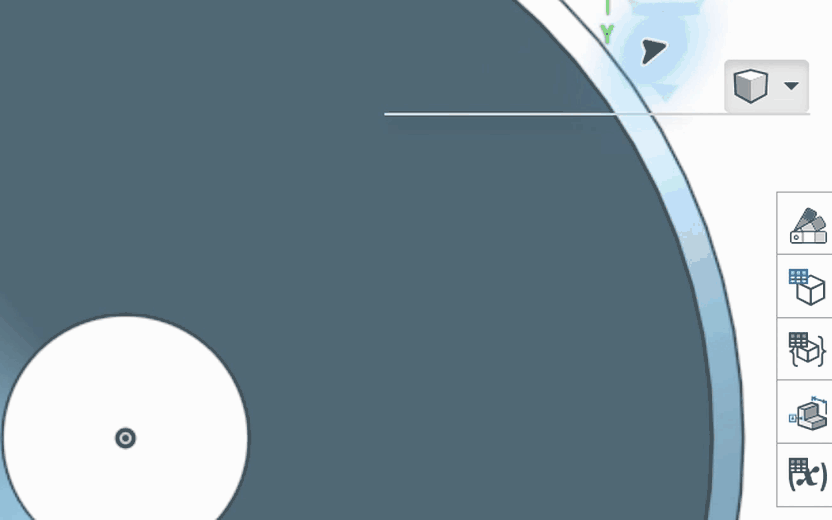
Steps 31–36第 31–36 步
In Features, click the Front row under Default geometry, then click Sketch. Check that the dialog says Front plane. Stay in the angled view for the next selection.
在 Features 中点击 Default geometry 下的前视平面 Front，再点击 Sketch。确认对话框显示 Front plane。下一步选面时先保持斜视图。
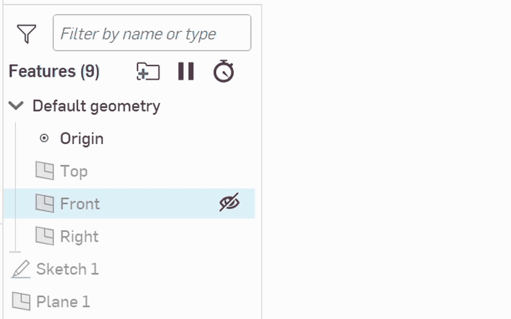
Click Search tools, type Intersection, and click the Intersection sketch tool. It is also in the dropdown beside Use on the sketch toolbar.
点击 Search tools，输入 Intersection，点击草图工具相交 Intersection。也可以从草图工具栏 Use 旁的下拉菜单找到它。
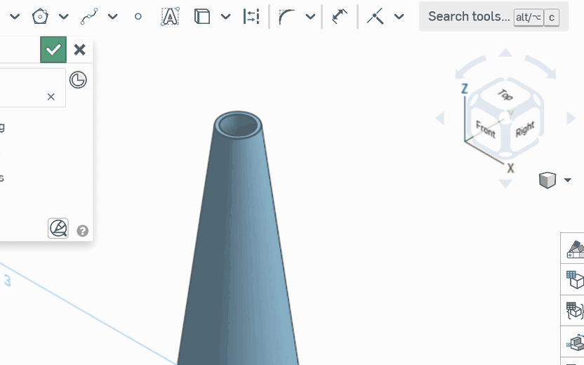
Click once on the broad, sloping outside wall about halfway up the cone. Press Esc, then click the Front face of the view cube.
在锥体大约一半高度处，点击一次外侧宽阔的倾斜曲面。按 Esc，再点击视图立方体上的 Front 面。
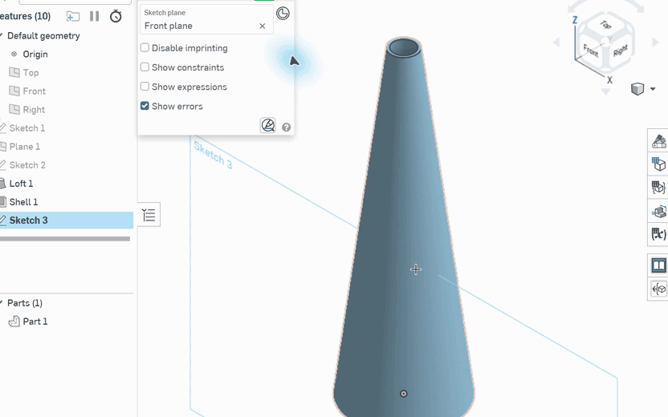
Look for two sloping lines where Front cuts through the outside wall. These lines give the flange profile an exact reference to the cone.
检查 Front 与锥体外壁相交后生成的两条斜线。后面的底座剖面将以这些线为准确参照。
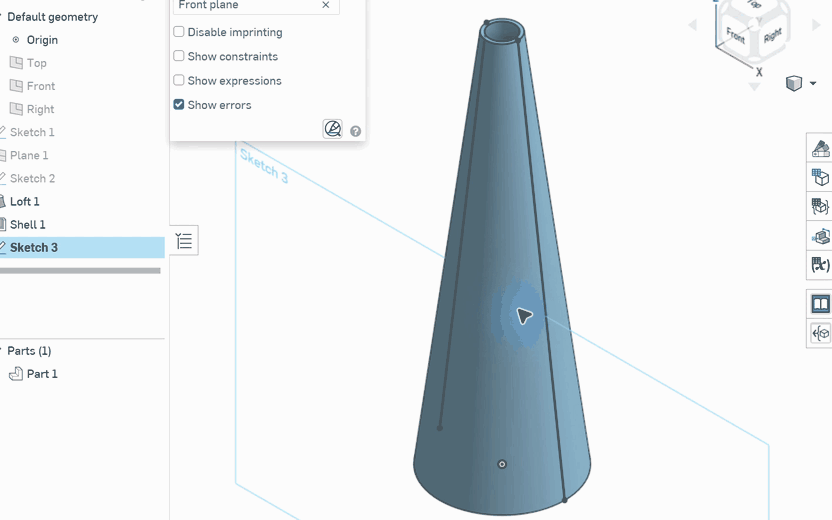
Right-click Part 1 in the Parts list and choose Hide. Move the pointer to the lower-right corner of the cone outline and scroll forward two notches to zoom in. If the corner is too low on screen, hold the middle mouse button and drag upward to pan.
在 Parts 列表中右键点击 Part 1，选择 Hide（隐藏）。把鼠标移到锥体轮廓的右下角，向前滚动两格放大。如果这个角在屏幕上位置太低，按住鼠标中键并向上拖动，平移到方便操作的位置。
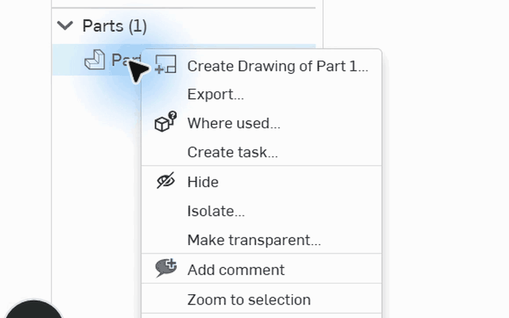
Click the left sloping line, then the right one. With both selected, click Construction, the dashed-line toggle on the sketch toolbar. Click blank space or press Space to clear the selection. Both lines should now be dashed.
先点击左斜线，再点击右斜线。保持两条线都被选中，点击草图工具栏的虚线按钮 Construction（构造线）。点击空白处或按 Space 清除选择，两条斜线现在都应显示为虚线。
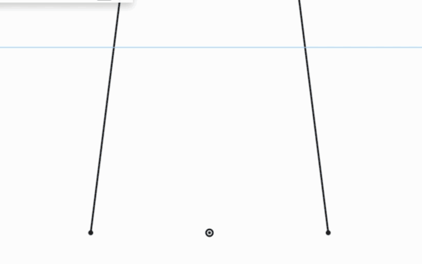
Steps 37–42第 37–42 步
Click Line. Follow the A–D diagram below for the click order. A is the bottom endpoint of the right dashed line. Click A. Move right at the same height and click B. Move straight up and click C. Move left at the same height and click D on the dashed slope. Click A again to close the four-sided loop, then press Esc.
点击 Line（直线）。按下方标有 A–D 的示意图找各落点。A 是右侧虚线的下端点，先点 A。向右水平移动，点 B。再竖直向上，点 C。从 C 水平向左，在与右侧虚线相交处点 D。最后再次点 A，闭合四边形，再按 Esc。
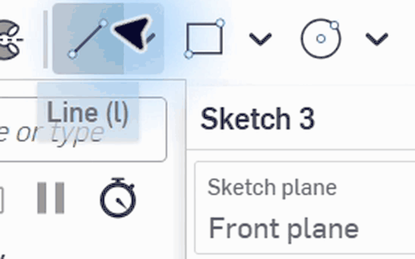
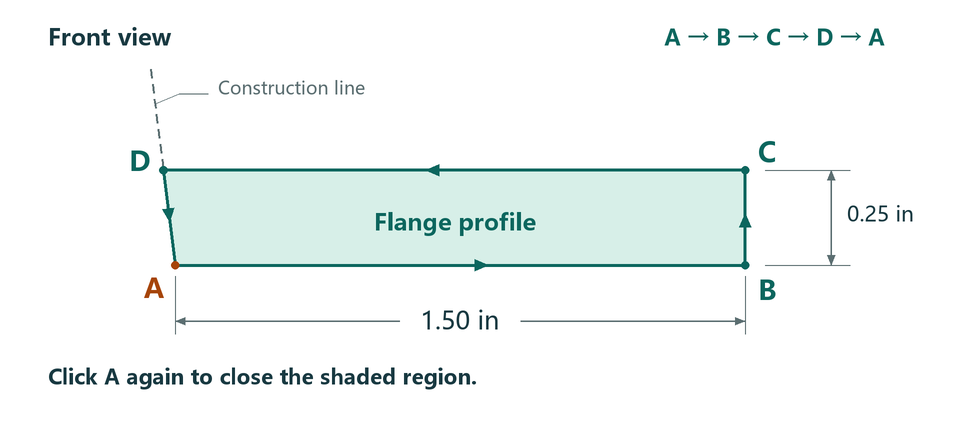
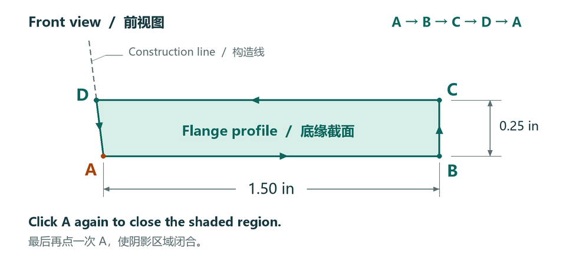
Click Dimension. Click the bottom line from A to B. Click blank space below it to place the label, type 1.50 in, and press Enter.
点击 Dimension。点击 A 到 B 的底边，再点击下方空白处放置标注，输入 1.50 in，按 Enter。
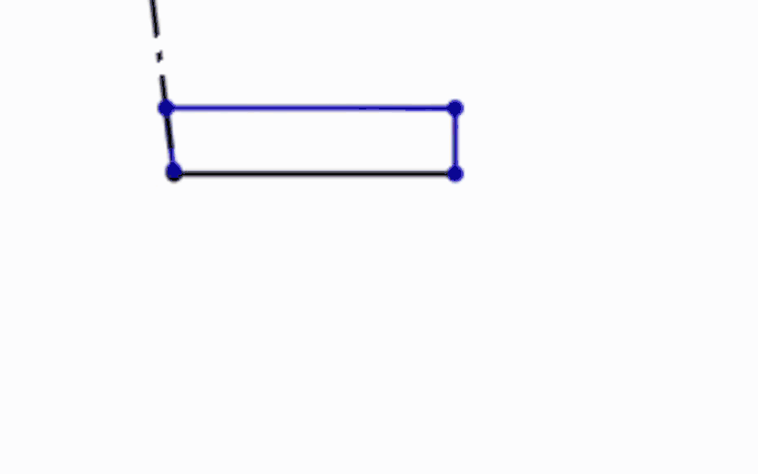
With Dimension still active, click the endpoints B and C, then click blank space to the right at a height between those points. Type 0.25 in, press Enter, then press Esc. The short edge can be hard to select by its midpoint, so use the two endpoints.
保持 Dimension 开启。依次点击端点 B、C，再到两点右侧、介于两点高度之间的空白处点击。输入 0.25 in，按 Enter，再按 Esc。这条短边的中点较难选，用两个端点更容易。
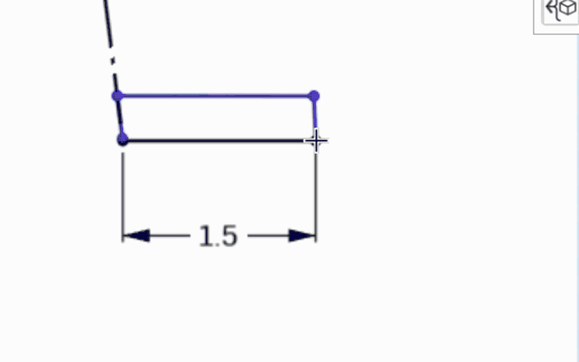
If CD is tilted, open the sketch constraints menu, choose Horizontal, click the top edge CD and press Esc. If BC leans sideways, choose Vertical from the same menu, click points B and C, then press Esc. Keep any horizontal or vertical constraint that Onshape already applied while you drew the lines.
如果顶边 CD 有倾斜，打开草图约束菜单，选 Horizontal（水平），点击顶边 CD，再按 Esc。如果 BC 侧边倾斜，在同一菜单选 Vertical（竖直），先后点 B 和 C，再按 Esc。画线时已经自动加上的水平或竖直约束可以直接保留。
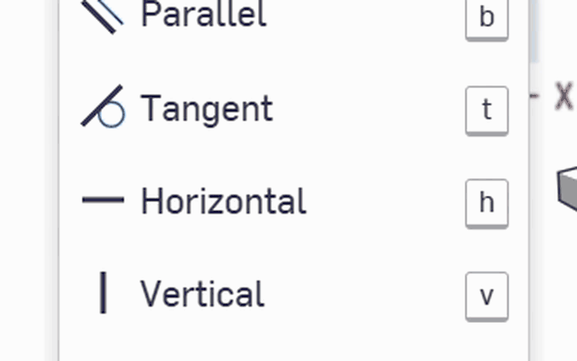
If the loop has a gap at A, move the pointer over A and scroll forward to enlarge it. Look for a separate endpoint near the lower end of the dashed line. In the constraints menu, choose Coincident. Click the loose endpoint, then click A where the lower edge meets the reference. Press Esc.
如果轮廓在 A 处有缝，把鼠标移到 A 附近并向前滚动，放大观察。在虚线的下端附近寻找分离的端点。打开约束菜单，选 Coincident（重合）。先点击分离的端点，再点击底边与参考线交会处的 A，按 Esc。
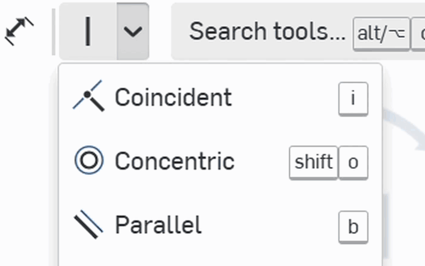
Check for gray shading inside the small four-sided profile. A closed region can be selected for Revolve. Black boundary lines indicate the edges are fully constrained. The dashed sloping lines remain construction geometry. If shading is missing, inspect the four corners for a gap before continuing.
检查小四边形内部是否出现灰色填充。闭合区域才能作为 Revolve 的剖面。四条边都变黑，表示它们已经完全约束。倾斜的虚线继续作为构造参考。如果没有填充，先检查四角是否有未闭合的端点，再继续。
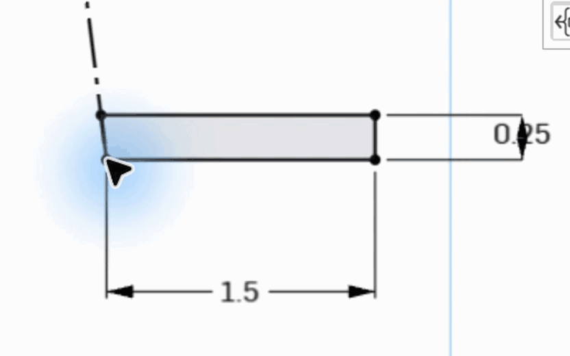
Steps 43–51第 43–51 步
Right-click Part 1 in the Parts list and click Show. Click the green checkmark to save Sketch 3.
在零件列表中右键点击 Part 1，选择显示 Show。点击绿色勾保存 Sketch 3。
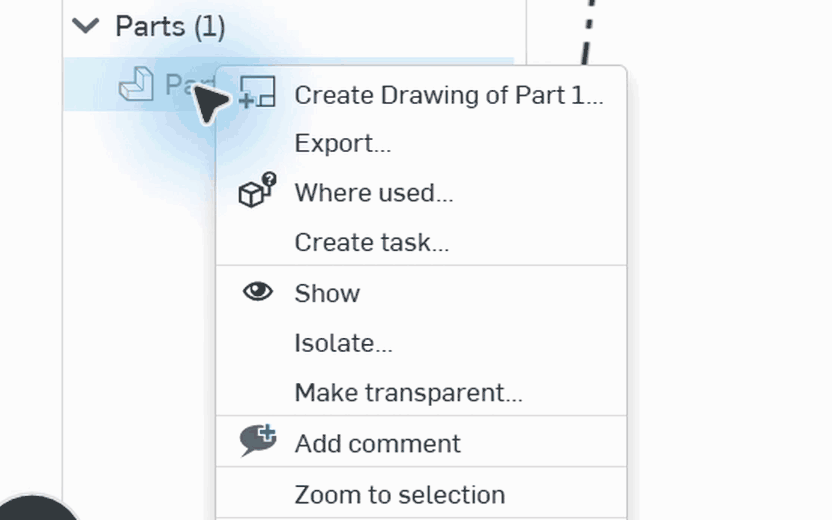
Click Search tools, type Revolve, and choose Revolve. Click Solid, then Add. The new flange will join the cone that already exists.
点击 Search tools，输入 Revolve，选择搜索结果中的 Revolve（旋转）。先选 Solid（实体），再选 Add（添加），让新底缘与已有的锥体连成一个零件。
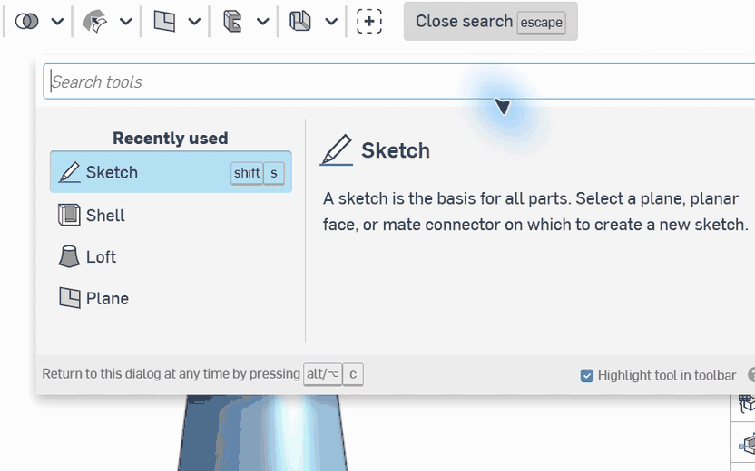
Click Faces and sketch regions to revolve. In Front view, click inside the small gray profile at the lower-right side of the cone, between its top and bottom lines. The field should show Face of Sketch 3.
点击待旋转的面与草图区域 Faces and sketch regions to revolve。在 Front 视图中，点击锥体右下方、小剖面上下两条边之间的灰色内部。字段应显示 Face of Sketch 3。
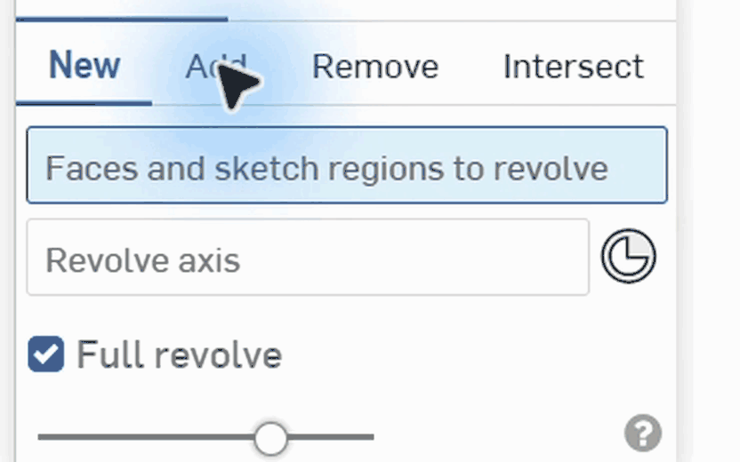
Click the Revolve axis field. Click the middle of the outside sloping wall of the cone, away from the top and bottom rims. The field should show Face of Loft 1. Onshape uses the center axis of that conical face.
点击旋转轴 Revolve axis 字段。在锥体外侧倾斜曲面的中间点击，避开上下端的圆边。字段应显示 Face of Loft 1。Onshape 会使用该圆锥面的中心轴。
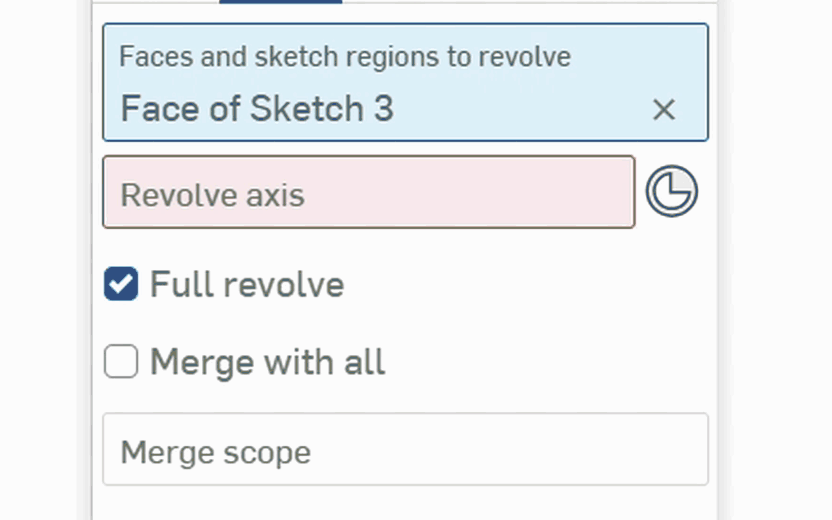
Keep Full revolve checked for 360 degrees. Check that Merge scope shows Part 1. If the box is empty, click it and then click Part 1 in the Parts list.
保持完整旋转 Full revolve 勾选，旋转一整周 360 度。确认合并范围 Merge scope 显示 Part 1。若该框为空，先点击它，再点击零件列表中的 Part 1。
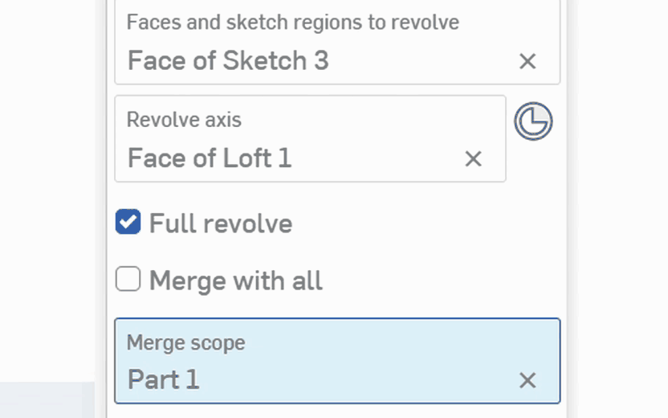
Open the Camera and render options menu and click Isometric. Check for a flat circular flange all the way around the cone and Parts (1). Click the green checkmark.
打开 Camera and render options 菜单并点击 Isometric。确认锥体四周出现平整的圆形底座，而且仍显示 Parts (1)，再点击绿色勾。
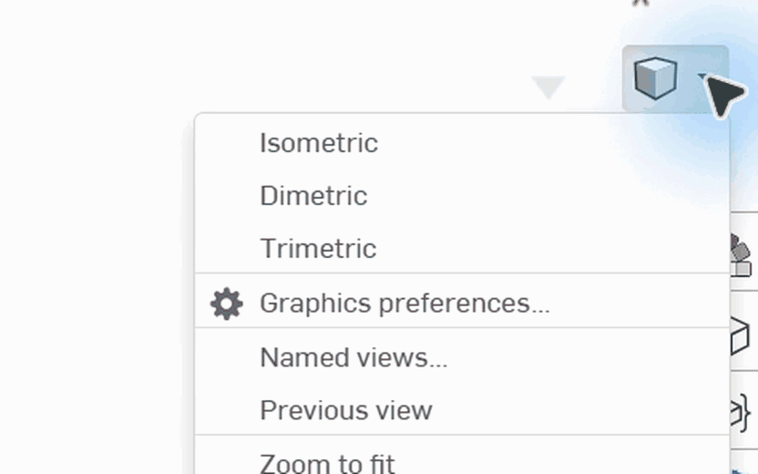
Turn the model until the underside is visible by holding the right mouse button and dragging. Click Bottom on the view cube to look straight at the base, or press Shift + 6.
按住鼠标右键拖动，将模型转到能看到底部的位置。点击视图立方体的 Bottom 正对底座，也可按 Shift + 6 直接切换。
Click the outermost circular edge of the flange near the bottom of the view. Read the measurement in the lower-right corner. It should say Diameter: 7.000 in. The center opening should still show the background. The 7 in diameter is a measurement check. It comes from the 4 in lower diameter plus a 1.50 in extension on each side.
点击底缘最外圈的圆边，可选视图下方的边缘。读屏幕右下角的测量结果，应显示 Diameter: 7.000 in。中央小孔仍应能透出背景。7 英寸是用来核验的外径：底部圆直径 4 英寸，左右各多出 1.50 英寸。
Click blank space or press Space to clear the selection. Open Camera and render options and choose Isometric. Shift + 7 also restores the isometric view.
点击空白处或按 Space 清除选择。打开 Camera and render options，选择 Isometric。按 Shift + 7 也能切回等轴视图。
Steps 52–56第 52–56 步
In the Parts list, right-click Part 1 and click Edit appearance.
在 Parts 列表中右键点击 Part 1，再点击编辑外观 Edit appearance。
Click the Palette tab. In the top row, click the orange swatch immediately to the right of the light blue swatch. Check that the hex field reads F88701. If the palette is different, enter F88701 in the hex field.
点击调色板 Palette 标签。在最上排，点击浅蓝色右侧紧邻的橙色色块。检查十六进制颜色字段是否为 F88701。如果调色板不同，可直接在该字段输入 F88701。
Click the green checkmark to apply the color, then click blank space. If a plane or the origin overlaps the view, hover over its row and click the eye to hide it. Shift + P toggles the reference geometry together.
点击绿色对勾应用颜色，再点空白处。如果参考平面或原点挡住模型，把鼠标移到对应行，点击眼睛图标隐藏它。Shift + P 也可一起切换参考几何的显示。
In the angled view, check that you can see the small opening, the tapered wall, and the round base. The Parts list should show Parts (1).
在斜视图中检查，能够看到小端开口、锥形侧壁和圆形底座。Parts 列表应显示 Parts (1)。
Read the feature list from top to bottom. It should contain Sketch 1, Plane 1, Sketch 2, Loft 1, Shell 1, Sketch 3, and Revolve 1.
从上到下查看特征列表，应依次有 Sketch 1、Plane 1、Sketch 2、Loft 1、Shell 1、Sketch 3、Revolve 1。